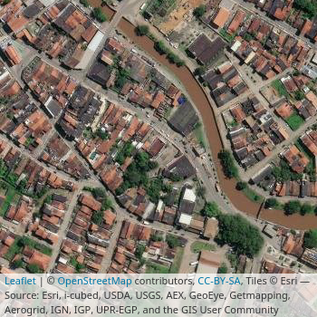

Aula 10
Tuning
Introdução
Qualquer problema supervisionado, como vimos ao longe deste curso, está sujeito ao trade-off entre viés e variância: um modelo que aprende a reduzir o viés na estimação de parâmetros a partir de uma amostra está sujeito a aumentar a variância dessa estimativa, isto é, a modelar ruído que não generaliza para outras amostras.
Nesta aula, estudaremos um método data-driven para encontrar o ponto ótimo deste trade-off: tuning. Com ele, poderemos identificar melhores combinações de modelos, hiper-paramêtros e features para reduzir viés e variância simultaneamente. Por hiper-parâmetros geralmente nos referimos a configurações que podemos fazer nos modelos para customizar a forma com que parâmetros (i.e., coeficientes ou pesos) serão estimados. Por tuning, por sua vez, indicamos o processo de otimizar uma função complexa (ou black-box) que possui diferentes inputs – caso de uma pipeline – para encontrar o melhor conjunto de hiper-paramêtros e etapas de pré-processamento com a finalidade de minimizar erro em uma estratégia de validação. Tuning, por essa razão, depende de uma boa estratégia de validação (ver a discussão de Neunhoeffer e Sternberg (2019) sobre esse ponto).
Estratégias
A ideia básica do tuning é a de testar diferentes combinações de hiper-parâmetros – de forma geral, comparar diferentes variações de pipelines – utilizando uma estratégia apropriada de validação. Em Ciência de Dados, essa parte do trabalho em um projeto é frequentemente chamado de model selection (o que também inclui feature selection, isto é, teste de diferentes etapas de pré-processamento) e, não à toa, frameworks como o sklearn em Python usam esse nome para agrupar diferentes classes utilizadas para o teste de pipelines.
Dentre as principais estratégias de tuning, três são amplamente utilizadas: grid search, random gridsearch e, mais recentemente, otimização bayesiana. Passaremos por cada uma na sequência.
Gridsearch
O algoritmo mais básico para encontrarmos configurações de pipelines úteis é o grid search, que nada mais é o do que o teste exaustivo de todas as combinações possíveis de hiper-parâmetros pré-especificadas. Um exemplo: imagine que queremos testar diferentes versões de um Random Forest (visto na aula 7), com proporção maior ou menor de features a reter1 e com maior ou menor número de árvores a serem treinadas. Com grid search, é fácil implementar este teste tanto em R quanto em Python:
1 Como vimos, RF usa um processo de sorteio de variáveis a usar para aumentar a diversidade das árvores fracas, os weak learners.
library(mlr3verse)
library(mlr3tuning)
library(tidyverse)
link <- "https://raw.githubusercontent.com/FLS-6497/datasets/main/aula7/eleicoes2000.csv"
dados <- readr::read_csv2(link) %>%
select(-cod_mun_ibge, -nome_municipio) %>%
mutate_if(is.character, as.factor)
# Define a task
tsk <- as_task_classif(partido ~ ., data = dados, positive = "PMDB-PSDB-PFL")
# Cria uma pipeline (e indica parametros para tuning)
gr <- po("learner", learner = lrn("classif.randomForest"),
ntree = to_tune(c(20, 50, 100)),
mtry = to_tune(c(3, 7, 11))) %>%
as_learner()
# Criamos uma instancia (parecido com um design grid)
instance <- ti(
task = tsk,
learner = gr,
resampling = rsmp("cv", folds = 5),
measures = msr("classif.fbeta"),
terminator = trm("none")
)
# Tuning
tuner <- tnr("grid_search")
tuner$optimize(instance)
# Os resultados ficam salvos em um tibble
as.data.table(instance$archive) %>%
as_tibble()
# Retreina a melhor pipeline na base completa
gr$param_set$values <- instance$result_learner_param_vals
gr$train(tsk)from sklearn.pipeline import Pipeline
from sklearn.model_selection import GridSearchCV
from sklearn.ensemble import RandomForestClassifier
from sklearn.preprocessing import OneHotEncoder
import pandas as pd
import numpy as np
# Carrega os dados
link = 'https://raw.githubusercontent.com/FLS-6497/datasets/main/aula7/eleicoes2000.csv'
dados = pd.read_csv(link, sep=';', decimal=",").drop(['cod_mun_ibge', 'nome_municipio'], axis=1)
dados['partido'] = np.where(dados['partido']=='Outros', 0, 1)
# Separa target e features
Y = dados['partido']
X = dados.loc[:, dados.columns != 'partido']
# Cria uma pipeline
pipe = Pipeline([('onehot', OneHotEncoder(handle_unknown='ignore')), ('rf', RandomForestClassifier())])
# Grid de parametros para testar
param_grid = [
{'rf__n_estimators': [20, 50, 100], 'rf__max_features': [3, 7, 11]}
]
# Roda o gridsearch usando 5-fold CV
res = GridSearchCV(pipe, param_grid, cv=5, scoring='f1')
res.fit(X, Y)
# Acessa a melhor pipeline
res.best_estimator_
res.best_score_Há dois detalhes importantes a notar quanto ao procedimento acima. Em primeiro lugar, é necessário especificar quais hiper-parâmetros iremos testar; em R, fazemos isso com a função to_tune e, em Python, usando um dicionário. Isso declarado, a função ou classe de grid search testará todas as combinações possíveis de hiper-parâmetros e retornará scores, de acordo com a métrica de validação definida, para identificarmos qual foi a melhor combinação entre as testadas.2 Em segundo lugar, grid search calcula scores com base em alguma estratégia de validação, geralmente K-fold cross validation com \(k=5\) por padrão – mas vale notar que essa nem sempre é a melhor estratégia, como vimos na aula anterior.
2 Note que, em R, o mlr3 retorna as melhores configurações e, ao fim, é necessário retreinar o modelo nos dados completos; em Python, o sklearn já treina as melhores configurações em toda a base ao final se o argumento refit=True for declarado (o que é o default).
Random gridsearch
Quando temos muitas combinações possíveis de hiper-parâmetros para testar, explorar cada uma delas pode ser inviável. Por conta disso, outra estratégia comum de tuning é sortear aleatoriamente apenas algumas combinações para teste. Em particular, geralmente esse procedimento é feito definindo-se um espaço de hiper-parâmetros maior. Implementar essa estratégia pode ser feito assim:
# Cria uma pipeline com um espaço de hiper-parametros maior
gr <- po("learner", learner = lrn("classif.randomForest"),
ntree = to_tune(lower = 10, upper = 300),
mtry = to_tune(lower = 3, upper = 11)) %>%
as_learner()
# Criamos uma instancia
instance <- ti(
task = tsk,
learner = gr,
resampling = rsmp("cv", folds = 5),
measures = msr("classif.fbeta"),
terminator = trm("evals", n_evals = 10)
)
# Tuning
tuner <- tnr("random_search")
tuner$optimize(instance)from sklearn.model_selection import RandomizedSearchCV
# Grid de parametros para testar
param_grid = [
{'rf__n_estimators': list(range(10, 300)), 'rf__max_features': list(range(3, 11))}
]
res = RandomizedSearchCV(pipe, param_grid, cv=5, scoring='f1', n_iter=3)
res.fit(X, Y)Otimização bayesiana
Grid search e random grid search, como dá para perceber pelos exemplos anteriores, não são as formas mais eficientes de se encontrar bons hiper-parâmetros – ambas gastam muito tempo e recursos investigando configurações ruins, isto é, elas não adotam otimização para fazer uma busca eficiente por uma configuração ideal. Há diferentes soluções que atacam este problema mas, tanto por ser mais utilizada quanto por ter implementação fácil em R e Python, uma que estudaremos em maior detalhe agora é a otimização bayesiana.3
3 Para quem usa Python, será necessário instalar o pacote scikit-optimize com pip install scikit-optimize no terminal. Para quem usa R, instalaremos o pacote mlr3mbo e o DiceKriging com install.packages(c("mlr3mbo", "DiceKriging")).
De forma resumida, otimização bayesiana é uma maneira de encontrar, rápida e eficientemente, boas configurações dentro de um espaço de hiper-parâmetros potencialmente grande. Para tanto, a otimização assume um prior vago sobre a função sendo otimizada e, depois de ver dados de validação das primeiras interações, atualiza a posterior para sugerir próximos valores mais promissores a serem testados – o que é diferente de selecionar aleatória ou sequencialmente combinações a serem testadas, como ocorre com random grid search ou grid search, respectivamente. É por isso que, no geral, otimização bayesiana tende a reduzir o tempo de tuning, especialmente quando há um espaço de hiper-parâmetros muito grande e quando a pipeline que usamos é complexa (e lenta para treinar). Implementá-la em R ou em Python é bastante simples utilizando os nossos frameworks:
# Criamos uma instancia
instance <- ti(
task = tsk,
learner = gr,
resampling = rsmp("cv", folds = 5),
measures = msr("classif.fbeta"),
terminator = trm("evals", n_evals = 10)
)
# Tuning
tuner <- tnr("mbo")
tuner$optimize(instance)from skopt import BayesSearchCV
# Grid de parametros para testar
param_grid = [
{'rf__n_estimators': list(range(10, 300)), 'rf__max_features': list(range(3, 11))}
]
res = BayesSearchCV(pipe, param_grid, cv=5, scoring='f1', n_iter = 10)
res.fit(X, Y)Controle
Stoppping
Se tivermos um espaço de hiper-parâmetros muito grande, ou se quisermos evitar testar mais combinações do que o necessário ou do que o possível em um dado período de tempo, pode ser útil ter formas de controlar o processo de tuning. Comumente, isso é feito por meio da definição de algum critério, como o de número máximo de combinações de hiper-parâmetros a testar; ou o de definir um limite de tempo de tuning a partir do qual ele será encerrado; ou, ainda, o de encerrar quando progressos não são mais alcançados. Neste aspecto, o mlr3 oferece muitas mais opções do que o sklearn:
| R | Python | |
|---|---|---|
| Iterações | trm("evals", n_evals = 10) |
n_iter=10 |
| Tempo | trm("run_time", secs = 100) |
|
| Performance | trm("perf_reached", level = 0) |
|
| Estagnação | trm("stagnation", iters = 10, threshold = 0.01) |
Alguns exemplos usando o mlr3:
# Parar depois de 10 minutos
instance1 <- ti(
task = tsk,
learner = gr,
resampling = rsmp("cv", folds = 5),
measures = msr("classif.fbeta"),
terminator = trm("run_time", secs = 600)
)
# Parar se atingir F1 de 0.8, senao continua ate esgotar o grid
instance2 <- ti(
task = tsk,
learner = gr,
resampling = rsmp("cv", folds = 5),
measures = msr("classif.fbeta"),
terminator = trm("perf_reached", level = 0.7)
)
# Para se nao melhorar mais que 0.01 apos 10 iteracoes
instance3 <- ti(
task = tsk,
learner = gr,
resampling = rsmp("cv", folds = 5),
measures = msr("classif.fbeta"),
terminator = trm("stagnation", iters = 10, threshold = 0.01)
)Espaço de hiper-parâmetros
Como selecionar valores de hiper-parâmetros para tuning? Esta não é uma pergunta simples de ser respondida porque, a depender do modelo utilizado e de etapas de pré-processamento, diferentes hiper-parâmetros estão disponíveis. Além de materiais na internet que podem ser úteis, o mlr3 tem uma biblioteca auxiliar que contém uma série de dicionários já pré-programados, com valores apropriados para diferentes tipos de tarefas, que podem ser implementados facilmente em um projeto por meio da função lts:
gr <- lts(lrn("classif.rpart"))
instance <- ti(
task = tsk,
learner = gr,
resampling = rsmp("cv", folds = 5),
measures = msr("classif.fbeta"),
terminator = trm("evals", n_evals = 25)
)
# Tuning
tuner <- tnr("random_search")
tuner$optimize(instance)
as.data.table(instance$archive) %>%
as_tibble()Outras estratégias
Grid search e random grid search são duas estratégias muito comuns e simples de tuning. Otimização bayesiana, como vimos anteriormente, vai um pouco além ao considerar de forma mais eficiente boas configurações para investigar sequencialmente. Além destas estratégias, há várias outras, algumas recentes, que podem ser tão ou mais úteis mas que, pelo tempo reduzido, não exploraremos.
Destas estratégias, o sklearn implementa o halvening, que vai descartando combinações que se saem pior em parcelas menores dos dados; mas também é possível utilizar pacotes externos para implementar outras. O mlr3, por sua vez, já contém várias alternativas. Uma lista pode ser consultada aqui. Um exemplo de implementação de tuning utilizando irace:
gr <- lts(lrn("classif.rpart"))
instance <- ti(
task = tsk,
learner = gr,
resampling = rsmp("cv", folds = 5),
measures = msr("classif.fbeta"),
terminator = trm("evals", n_evals = 100)
)
# Tuning
tuner <- tnr("irace")
tuner$optimize(instance)Paralelização
Tuning é algo que costuma tomar bastante tempo de processamento. No caso em que utilizamos computadores com mais de um CPU – praticamente qualquer computador hoje em dia – podemos nos valer disso para implementar paralelização, isto é, para dividir o processamento do teste de diferentes combinações de hiper-parâmetros. A depender da capacidade de processamento do seu computador, paralelização pode facilmente reduzir em várias vezes o tempo levado para tuning de um pipeline.
Com o mlr3, é necessário usar o pacote future para usar paralelização.4 Com ele instalado, o processo é simples: basta incluir uma chamada à função plan (workers indica o número de threads a serem usadas):
4 Paralelização em R, de forma geral, é algo mais complicado e no mais das vezes requer soluções específicas. Para uma discussão mais detida sobre como o mlr3 implementa paralelização, ver o capítulo 8 do mlr3 book.
future::plan("multisession", workers = 4)Em Python, todas as classes de tuning que vimos contêm um argumento chamado n_jobs para controlar o número de CPUs a serem utilizados (é possível definir n_jobs=-1 para usar todos os núcleos disponíveis).
Reprodutibilidade
Tuning e resampling são processos que envolvem processos aleatórios de sorteios.5 Por conta disso, rodar um workflow inteiro duas vezes pode produzir resultados distintos. Para evitar isso, uma boa prática é utilizar seeds, isto é, um número de inicialização que garante a reprodução de um sorteio ou de uma sequência de sorteios.
5 Alguns algoritmos também utilizam sorteio para iniciar parâmetros, caso de algoritmos de boosting e bagging, por exemplo.
Em R, é possível definir um seed com set.seed(123), por exemplo, logo no início de um script. Em Python, é possível usar numpy para definir um seed global com np.random.seed(123), mas várias classes também possuem um argumento random_state que permitem definir seeds locais, o que também é algo recomendado a se fazer.
Extra: imagens
Para a próxima aula, precisaremos ser capazes de carregar imagens em um formato apropriado para análise – o mais comum, uma base com três dimensões, sendo elas altura, largura e RGB, isto é, posição vertical e horizontal de cada pixel, bem como a sua coloração. Há pacotes específicos para isso em R e em Python, mas, para a nossa comodidade, usaremos funcionalidades nativas no Keras para isso.
Para quem quiser saber mais antes da aula, ver este tutorial em R e outro em Python.
A título de exemplo, trabalharemos para criar um classificador simples para predizer se uma dada seção eleitoral é urbana ou rural a partir de imagens de satélite6.
6 A classificação de urbano ou rural foi tirada a partir dos polígonos de setores censitários da base de 2010, que foram cruzados com uma base georreferenciada de seções eleitorais.

Seções eleitorais